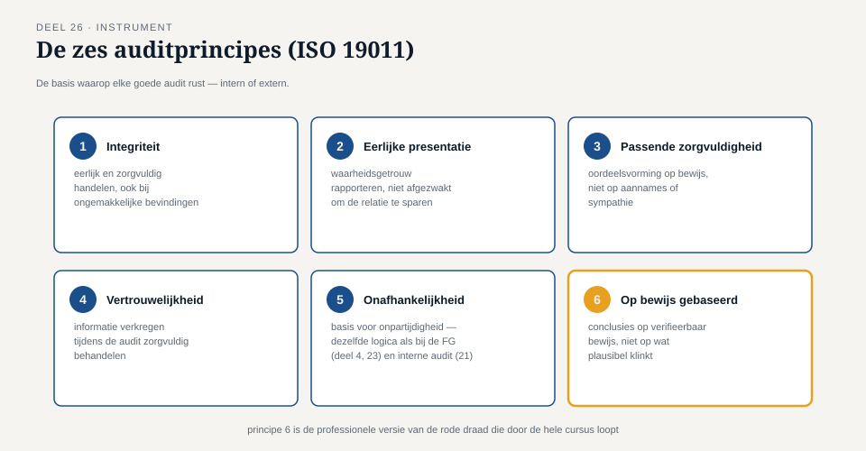
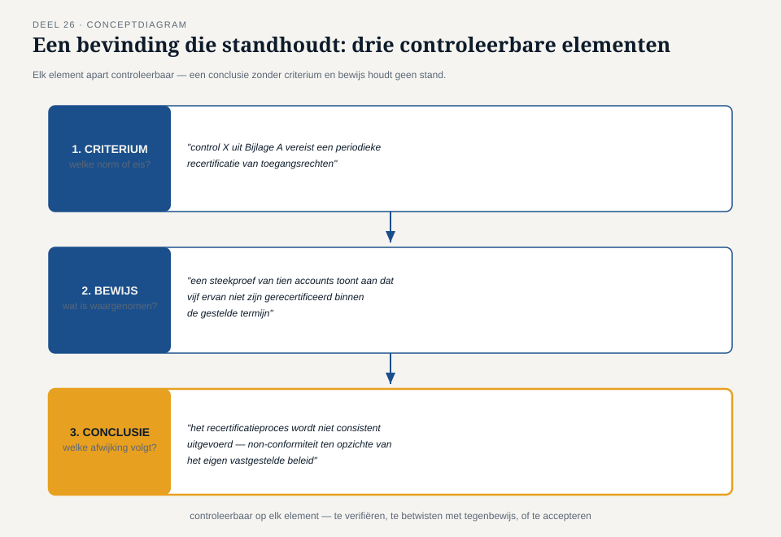
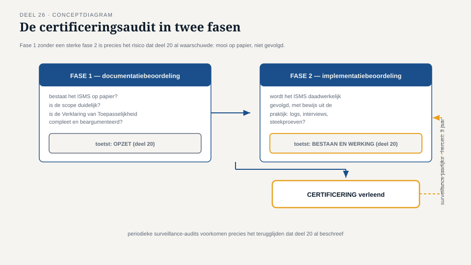

Deel 26 — Auditeren
Reader · Ductus-cursus Informatiebeveiliging en Privacy · niveau 3 (expert) · deel 26 van 30
Casusvervolg: Merel wisselt van stoel
Meridiaan besluit, als onderdeel van de voorbereiding op certificering (deel 11 introduceerde dit concept; nu wordt het werkelijkheid), een externe auditor uit te nodigen voor een pre-assessment vóór de formele certificeringsaudit. Merel krijgt een ongewone rol: niet als opsteller van het ISMS, maar als geauditeerde die het dossier moet verdedigen voor iemand die geen enkel belang heeft bij een positieve uitkomst. "Ik heb tien mensen leren auditeren met dreigingsmodellering en DPIA's," zegt ze tegen Sanne. "Ik heb nog nooit geleerd hoe het is om zelf de andere kant van de tafel te zitten." Dit deel behandelt beide kanten: hoe je auditeert, én hoe je je laat auditeren.
1. Auditprincipes
Een goede audit — intern (deel 21) of extern — rust op een aantal vaste principes, vastgelegd in de internationale auditnorm ISO 19011 waarop de meeste auditpraktijken zich baseren:
- Integriteit — de auditor handelt eerlijk en zorgvuldig, ook als bevindingen ongemakkelijk zijn.
- Eerlijke presentatie — bevindingen worden waarheidsgetrouw en accuraat gerapporteerd, niet afgezwakt om de relatie met de geauditeerde te sparen.
- Passende beroepsmatige zorgvuldigheid — de auditor gebruikt oordeelsvorming op basis van bewijs, niet op basis van aannames of sympathie.
- Vertrouwelijkheid — informatie die tijdens de audit wordt verkregen, wordt zorgvuldig behandeld.
- Onafhankelijkheid — de basis voor onpartijdigheid en objectiviteit van de conclusies; dit is dezelfde onafhankelijkheidslogica als bij de FG (deel 4, deel 23) en interne audit (deel 21), nu toegepast op de externe auditor.
- Op bewijs gebaseerde aanpak — conclusies worden getrokken op basis van verifieerbaar bewijs, niet op basis van wat plausibel klinkt. Dit is de formele, professionele versie van de rode draad die door de hele cursus loopt: een auditor gelooft geen claim zonder bewijs.
2. Het auditprogramma
Een auditprogramma is de planning van welke audits wanneer plaatsvinden, met welke scope en welke diepgang — vergelijkbaar met hoe een risicobeoordeling (deel 12) bepaalt waar de aandacht naartoe moet gaan, bepaalt een auditprogramma waar en hoe vaak wordt getoetst. Een goed auditprogramma is risicogebaseerd: onderdelen met hoger risico (bijvoorbeeld het invaarproces tijdens de Stelselovergang) worden vaker of grondiger geauditeerd dan stabiele, laag-risico onderdelen.
3. Bevindingen formuleren die standhouden
De kern van het auditvak is het formuleren van bevindingen — waarnemingen die worden beoordeeld tegen een vastgesteld criterium (de norm, het eigen beleid, een wettelijke eis). Een goede bevinding bevat drie elementen die elk apart controleerbaar moeten zijn:
- Het criterium — welke norm of eis is van toepassing? (bijvoorbeeld: "control X uit Bijlage A vereist een periodieke recertificatie van toegangsrechten")
- Het bewijs — wat is feitelijk waargenomen? (bijvoorbeeld: "een steekproef van tien accounts toont aan dat vijf ervan niet zijn gerecertificeerd binnen de gestelde termijn")
- De conclusie — welke afwijking (of bevestiging) volgt hieruit? (bijvoorbeeld: "het recertificatieproces wordt niet consistent uitgevoerd, wat een non-conformiteit vormt ten opzichte van het eigen vastgestelde beleid")
Een bevinding die alleen een conclusie geeft zonder criterium en bewijs ("het toegangsbeheer is onvoldoende") is niet controleerbaar en houdt geen stand bij een discussie of een beroep. Een bevinding die alle drie elementen bevat, kan door de geauditeerde worden geverifieerd, betwist met tegenbewijs, of geaccepteerd — precies de aantoonbaarheidslogica die door de hele cursus loopt, nu toegepast op het formuleren van bevindingen zelf.
4. Non-conformiteiten: klein versus groot
Niet elke afwijking is even ernstig. Auditpraktijk maakt doorgaans onderscheid tussen:
- Kleine (minor) non-conformiteit — een geïsoleerde afwijking die het systeem als geheel niet ondermijnt, bijvoorbeeld een enkel gemist recertificatiemoment binnen een verder goed functionerend proces.
- Grote (major) non-conformiteit — een structurele tekortkoming die het vertrouwen in het hele systeem of een significant deel ervan ondermijnt, bijvoorbeeld een geheel ontbrekend proces voor een verplicht onderdeel, of een herhaling van dezelfde kleine non-conformiteit die aantoont dat een eerdere correctie niet heeft standgehouden.
Dit onderscheid bepaalt het vervolg: een kleine non-conformiteit vraagt om een corrigerende maatregel binnen een redelijke termijn; een grote non-conformiteit kan een certificering blokkeren totdat ze is opgelost. Het incident uit deel 19 — een uitzondering zonder vervaldatum die tot een datalek leidde — zou, als een auditor het vóór het incident had gevonden, waarschijnlijk als kleine non-conformiteit zijn beoordeeld (een geïsoleerd gemiste vervaldatum); het feit dat het vervolgens tot een daadwerkelijk incident leidde, illustreert waarom zelfs kleine non-conformiteiten serieus moeten worden opgevolgd.
5. De certificeringsaudit in twee fasen
Een formele ISO 27001-certificeringsaudit (deel 11) verloopt in twee fasen:
- Fase 1 — een documentatiebeoordeling: bestaat het ISMS op papier, is de scope duidelijk, is de Verklaring van Toepasselijkheid compleet en beargumenteerd, zijn de kernprocessen beschreven? Dit toetst grotendeels opzet (deel 20).
- Fase 2 — een implementatiebeoordeling: wordt het ISMS daadwerkelijk gevolgd, met bewijs uit de praktijk — logs, interviews, steekproeven? Dit toetst bestaan en werking (deel 20).
Een organisatie die fase 1 goed doorstaat maar fase 2 niet, heeft precies het probleem dat deel 20 al waarschuwde: een prachtig opgezet systeem dat in de praktijk niet wordt gevolgd. Certificering wordt pas verleend na een succesvolle fase 2, en wordt periodiek (doorgaans jaarlijks, met een hercertificering na drie jaar) opnieuw getoetst via surveillance-audits, om te voorkomen dat het systeem na certificering verslapt — hetzelfde terugglijdingsrisico dat deel 20 al beschreef.
6. De andere kant: hoe je een audit doorkomt zonder je dossier te verfraaien
Merels vraag aan Sanne — hoe is het om aan de andere kant van de tafel te zitten — verdient een eigen antwoord. Een aantal principes voor de geauditeerde:
- Bereid je dossier voor zoals in deel 25 beschreven — helder gestructureerd, met concrete meetwaarden, zichtbare afwegingen, en bewijs van herhaling. Dit is geen andere vaardigheid dan de voorbereiding op een toezichtsonderzoek; het is dezelfde vaardigheid, nu toegepast op een auditor in plaats van een toezichthouder.
- Verfraai niet, corrigeer wel vóór de audit wat je zelf al weet dat niet klopt. Een auditor die tijdens de audit zelf een probleem ontdekt dat de organisatie al kende maar niet had opgelost, beoordeelt dat zwaarder dan een probleem dat de organisatie zelf al had gesignaleerd en aan het verhelpen was — eerlijkheid over bekende tekortkomingen, met een verbeterplan, is sterker dan de illusie van perfectie.
- Betwist een bevinding met bewijs, niet met bezwaar. Als een auditor een bevinding formuleert die feitelijk onjuist is, is het juiste antwoord concreet tegenbewijs aandragen (bijvoorbeeld: een logbestand dat aantoont dat de recertificatie wél heeft plaatsgevonden), niet een emotioneel of autoriteitsgebaseerd bezwaar ("dat kan niet kloppen, wij doen dit altijd goed").
- Behandel een bevinding als informatie, niet als een aanval. Dit is een directe toepassing van de cultuur van veilig leren uit deel 14: een organisatie die auditbevindingen defensief ontvangt, leert er minder van dan een organisatie die ze als waardevolle, onafhankelijke input beschouwt.
7. Terug naar Merel
Bij het pre-assessment vindt de externe auditor twee kleine non-conformiteiten (een niet-actuele risicobeoordeling voor een recent toegevoegd systeem, en een uitzonderingenregister met één post die de vervaldatum net heeft overschreden zonder tijdige heroverweging — een klein, direct herstelbaar echo van het incident uit deel 19) en één punt van aandacht dat geen formele non-conformiteit is maar wel een aanbeveling: de datakwaliteitscontroles voor het invaarproces zouden baat hebben bij een duidelijkere trendrapportage over tijd. Merel ontvangt dit niet als falen, maar precies zoals paragraaf 6 aanbeveelt: als bruikbare informatie, die ze binnen twee weken corrigeert en aan Hugo rapporteert als bewijs dat het ISMS — inclusief zijn eigen, ingebouwde correctiemechanisme — daadwerkelijk werkt.


